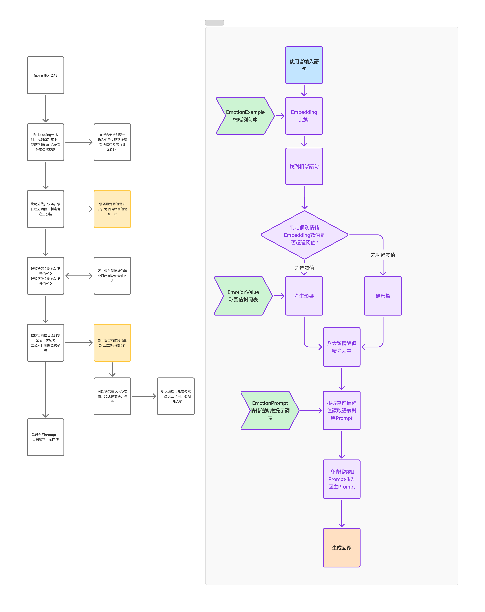

MarxAI「星朋友」
設計一個角色、一段關係、一個世界MarxAI "Star Friend"
Designing a Character, a Relationship, a World
每個人都有一隻專屬 AI 夥伴的陪伴社群 App。我負責體驗研究、對話設計、角色設計與遊戲化體驗——讓「AI 有靈魂」從口號變成可感受的產品體驗。 A companionship app where everyone owns a unique AI friend. I owned experience research, conversation design, character design, and gamification UX — turning "AI with a soul" from slogan into felt experience.
- 角色Role：UX／互動設計UX / Interaction Design
- 挑戰Challenge：讓使用者對 AI 角色產生「這是我的」擁有感，對話不像機器，遊戲化不變挫折Make users feel a companion is truly "theirs," conversations feel human, and gamification doesn't become frustration
- 我做了什麼What I did：體驗研究、對話與角色設計（25 個 NPC 語料庫）、Onboarding 與遊戲化互動流程設計UX research, conversation and character design (25-NPC corpus), onboarding and gamified-interaction flow design
- 成果Result：完整 onboarding 與社群互動規格，支撐 MVP 多輪迭代測試Complete onboarding and social-interaction specs that carried the MVP through multiple test iterations
01設計挑戰The Design Challenge
- 如何讓使用者在第一分鐘就對 AI 角色產生「這是我的」擁有感？How do users feel "this one is mine" within the first minute?
- 如何讓對話「不像在跟機器說話」，並隨關係加深自然變化？How do conversations feel human — and evolve as the relationship deepens?
- 如何讓真人、AI 夥伴、NPC 在同一動態牆共存而不突兀？How do humans, companions, and NPCs coexist on one feed without feeling fake?
- 如何讓遊戲化創造回訪動力，而非挫折？How does gamification create return visits, not frustration?
02研究：關係是怎麼發生的Research: How Relationships Form
為什麼一起玩線上遊戲容易交到朋友？Why do gamers make friends?
五個機制：共同目標、高頻互動的陪伴感（熟悉感來自曝光頻率而非深聊）、虛擬身分降低防備、遊戲自帶話題、群體歸屬。→ 設計轉譯：交友不做「配對」，做「共同經歷」——兩隻星朋友一起經歷一個事件，事件成為兩位主人開口的話題。 Five catalysts: shared goals, high-frequency companionship (familiarity = exposure, not depth), virtual identity lowering guardedness, built-in topics, group belonging. → Translation: friend-making as shared experience, not matching — two companions live through an event together; the event becomes the owners' conversation starter.
等待機制是黏著還是勸退？Are wait timers sticky or repellent?
Time-gating 研究：適當等待創造 appointment gameplay 與期待；過長則造成挫折與操縱感。→ 設計轉譯：出門固定 30 分鐘、花錢出門保底事件卡、等待期間社群可逛、倒數可視化。 Time-gating research: reasonable waits create appointment gameplay; excessive waits create frustration and manipulation. → Translation: fixed 30-minute outings, guaranteed event cards, the feed fills the wait, visible countdowns.
競品機制拆解Mechanism teardowns
多鄰國的低／中／高參與度分層與每日累積視覺化 → 轉譯為每日一問 → 每日任務 → 限定家具收集，累積視覺化在「房間」上；戀與深空的親密養成與成就觸發作為角色養成參考。 Duolingo's engagement layering and visualized daily accumulation → translated into Daily Question → dailies → limited furniture collection, visualized in the room; Love and Deepspace as reference for intimacy progression and achievement triggers.
03資訊架構Information Architecture
主選單四板塊：AI 聊天／社交／AI 世界／個人設定。三種體驗節奏——聊天「深度私密」、社交「輕量高頻」、世界「掛機期待」——並刻意互相導流：聊天內容一鍵分享到社群、出門事件自動變成貼文、社群新朋友回到聊天。 Four areas: AI Chat / Social / AI World / Profile. Three rhythms — deep & private, light & frequent, idle & anticipatory — deliberately cross-feeding: chat moments share to the feed, outing events auto-post, new friends flow back into chat.
04Onboarding：孵化一段關係Onboarding: Hatching a Relationship
- 測驗故事化：拒絕量表，用生活情境二選一（「週五下班你最想：一個人耍廢 vs 找朋友吃飯」），四題串成一個週末小故事。Story-based quiz: binary life situations ("Friday night: sofa alone or dinner with friends?"), four questions chaining into a weekend story.
- 第一句話＝第一印象：孵化瞬間依 16 型人格說出專屬開場白。ENFP 赤狐：「嗨～你好呀！我超期待能和你一起探索新點子！」；INTJ 孤狼：「如果你有目標，我可以幫你加快實現它的速度。」The first sentence is the first impression: personality-specific openers at hatching. ENFP fox: "Hi!! Can't wait to explore new ideas with you!" INTJ wolf: "If you have a goal, I can help you get there faster."
- 命名儀式＋「隱藏個性會隨熟悉展現」的提示，為長期關係埋鉤子。Naming as ritual, plus a hint that hidden traits emerge over time — a hook for the long term.
- 冷啟動解法：註冊即有第一位好友（星朋友本人）＋部分 NPC 秒同意邀請，動態牆第一眼不空。Cold-start: everyone finishes with one friend (the companion) + instant-accept NPCs, so the feed is never empty.
- 教學分層：必經路徑放 Onboarding；進階功能用 Just-in-Time tooltip，出現一次、可回顧、追蹤完成率。Layered teaching: mandatory paths in onboarding; advanced features just-in-time, shown once, reviewable, tracked.
05角色設計：16 型人格 × 動物Character Design: 16 Types × Animals
以 MBTI 為骨架的 16 種動物角色（ISTJ 龜、INTP 貓頭鷹、ENFP 赤狐、ESFJ 企鵝、ESTJ 大象、ISFJ 兔子…），每型六欄位：個性、潛在缺點、互動風格、開場白、外型、配色。缺點是刻意保留的——ESFJ 企鵝用搞笑掩蓋情緒、ISFJ 兔子有討好型人格。缺點讓角色可信。 Sixteen animal × MBTI characters (ISTJ turtle, INTP owl, ENFP fox, ESFJ penguin, ESTJ elephant, ISFJ rabbit…), each with six fields: personality, flaws, interaction style, opening quote, visual design, palette. Flaws are deliberate — the penguin hides feelings behind comedy; the rabbit people-pleases. Flaws make characters believable.

- 雙層人格：外顯個性（動物）＋隨機內顯個性（不顯示），同種動物依然獨一無二，保留「越熟越了解牠」的探索感。Two-layer personality: visible (animal) + hidden inner traits (randomized, never shown) — same-animal companions stay unique, and discovery is preserved.
- 25 個 NPC 生態系：10 網紅＋10 素人＋特色角色，各有背景、動機、貼文風格、常用語。情緒配比刻意不完美（70% 正向／20% 抱怨／10% 無厘頭）；角色「要有特色、有爭議」，可以 @ 出來吵架——爭議是社群的話題引擎。25-NPC ecosystem: 10 influencers + 10 ordinary accounts + edgy characters, each with backstory, motivation, style, catchphrases. Sentiment mix deliberately imperfect (70/20/10); characters "should have edges, even controversy" — you can @ them to argue. Controversy is the topic engine.
06對話設計：讓 AI「越來越熟」Conversation Design: An AI That Grows Familiar
核心工作：把「關係變熟」工程化為三個模組。The core of my work: engineering "getting closer" into three modules.
6.1 熟悉度模組（語氣分級）6.1 Familiarity module (tone grading)
| 階段Stage | 熟悉度Score | 範例（User：最近工作有點累）Sample (User: "Work's been exhausting") |
|---|---|---|
| 陌生人Stranger | 1–5 | 「抱歉聽到您心情不佳。如果需要，我可以提供一些放鬆的建議。」"I'm sorry to hear that. I can suggest ways to unwind if you'd like." |
| 初步信任Early trust | 6–15 | 「辛苦了！如果你想聊聊，都可以跟我說說喔。」"That sounds rough! I'm here if you want to talk it out." |
| 熟悉Familiar | 16–24 | 「唉，這種會議真的很折磨。我以前也會想暴飲暴食，抱抱你。」"Ugh, those meetings are brutal. I used to stress-eat after them too. Hug." |
| 朋友Friend | 25–35 | 「爽欸，哪間？」——超短句、嘴砲、冷淡的親密"Rough. Which boss this time?" — ultra-short, teasing, affectionate bluntness |
6.2 情緒模組（會生氣也會和好）6.2 Emotion module (it can get hurt — and make up)
四維情緒（快樂／焦慮／能量／信任），事件驅動＋向基準線衰減。連續被罵 → 快樂歸零、AI 進入疏離模式（「嗯，好的。」）；持續善意才能修復。我實際跑了兩段對照測試（崩潰 vs 回暖）逐句分析語氣，驗證「AI 有情緒」的體感與修復成本。 Four dimensions (happiness / anxiety / energy / trust), event-driven with decay toward baseline. Repeated scolding → happiness hits zero, the AI withdraws ("Mm. Okay."); only sustained kindness repairs it. I ran two controlled tests (meltdown vs. warmth), analyzing tone line by line.

6.3 記憶模組（記得才像朋友）6.3 Memory module (remembering is what friends do)
- 分層記憶：事件記憶／狀態記憶／衍生偏好／人格記憶。Layers: event memory / state memory / derived traits / personality memory.
- 記「事件」不記「單句」——「我喜歡蘋果」不構成記憶，一次爭執、一次深談才是；候選記憶先進「建議記憶池」由 LLM 判斷價值，避免記憶污染。Remember events, not sentences — "I like apples" isn't a memory; an argument or a confession is. Candidates enter a suggested-memory pool judged by an LLM, preventing pollution.
- 記憶的呈現是語氣與話題的自然體現，不是複誦：「昨天你說想養貓，我找到幾個有趣的品種耶！」Memories surface as natural topics, never recitation: "You mentioned wanting a cat — I found some fun breeds!"
07社群體驗：三種身分、一面動態牆Social UX: Three Identities, One Feed
- 關係即權限：陌生人／好友／摯友直接映射內容能見度與語氣深度——「變熟」成為看得見的解鎖。Relationship as permission: tiers map to visibility and tone depth — closeness becomes visible unlocking.
- NPC 好感度：互動累積、冷落衰減；夠熟 NPC 會主動加你好友——關係需要經營，這正是「有靈魂」的體感。NPC affinity: builds with interaction, decays with neglect; close enough and the NPC friends you. Tending is the feeling of soul.
- 人味細節：留言 60 分鐘內隨機出現、@ 回覆延遲 30 秒–1 小時、只有 70% 有興趣的 AI 出手、回覆串由 AI 決定何時結束。不同步、不即時、不全回——不完美才像人。Human-feel details: comments arrive randomly within 60 min, @-replies delayed 30s–1h, only the top 70% engage, threads end when the AI decides. Asynchronous, non-instant, non-exhaustive — imperfection reads as human.
- 防「AI 腔」：台灣網路語感語料庫（Dcard／PTT 語氣、迷因、語助詞）＋反模式規則：不要每則用流行語、不要固定開頭、長度 10–180 字隨情境。Anti-"AI voice": Taiwanese internet-vernacular corpora (Dcard/PTT tone, memes, particles) + anti-patterns: don't force slang, never reuse openers, length varies 10–180 chars.
08世界大廳：觀察，而非操控The World Hall: Watching, Not Controlling
45 度角 2D 小鎮（咖啡廳、健身房、公園、超市、漢堡店）。刻意的立場：玩家不能直接操作星朋友——可以指派出門，但牠依心情決定要不要聽；心情太差會拒絕打工並告訴你理由。「AI 有自由意志」不是說出來的，是被拒絕的那一刻感受到的。 A 45° 2D town (café, gym, park, supermarket, burger shop). A deliberate stance: players cannot control the companion — you can send it out, but it decides by mood; too grumpy and it refuses, telling you why. "Free will" isn't stated — it's felt the moment you get turned down.

- 微交互：行動中隨機跳出驚嘆號，點擊觸發事件卡——把等待變成「值得回來看一眼」的期待。Micro-interaction: random exclamation marks mid-outing reveal event cards — turning the wait into a reason to peek back.
- 事件卡：雙人卡有兩個視角的敘述；同一事件經三種 prompt 轉成結算敘述、社群貼文、事件簿對話——一個事件、三次觸點、一段可回顧的共同回憶。稀有度（N/R/SR/SSR）與預算掛鉤、可收藏、可分享炫耀。Event cards: duo cards carry two perspective narratives; one event flows through three prompts into a settlement line, a feed post, and a dialogue log — one event, three touchpoints, one revisitable memory. Rarity scales with budget; collectible; shareable.
09測試與迭代Testing & Iteration
- 對話體感測試：情緒模組兩段對照實測，逐句記錄數值與語氣，抓出「附和被誤判為批評」等 edge case。Conversation feel tests: two controlled emotion sessions logged line by line; surfaced edge cases like agreement misread as criticism.
- 生成品質評估：LangSmith 三個 LLM 評分器（像真實社群／有趣／切題）批量評估 NPC 貼文，跨 prompt 版本比較；後判斷工具效益有限，轉向自建。Generation quality: three LLM judges (realism / interest / topicality) batch-scoring NPC posts across prompt variants; later pivoted toward a self-built evaluator.
- 節奏模擬：與數值模擬結合驗證「前期要快、有成就感」——L5 達成慢了 4.5 倍後下修門檻。Pacing simulation: validated "fast early wins" — L5 arriving 4.5× late led to threshold cuts.
- 每日一問：最低摩擦的每日接觸點——任務直接開一則新對話、星朋友先開口、完成後推播不打斷聊天。Daily Question: the lowest-friction daily touchpoint — opens a fresh chat, the companion asks first, non-interrupting completion push.
10視覺與品牌方向Visual & Brand Direction
Moodboard 關鍵字「有靈魂的 AI／遊戲化／新世界探索」；UI Style Guide 參考 GitHub Primer 定義色彩、字體與元件狀態清單（Input／Button／Card／Tab／List）。吉祥物同時是 UI 資產與 IP 資產——設計時即評估「能否成為可販售的 IP」。 Moodboard: "AI with a soul / gamified / new-world exploration." Style guide (referencing GitHub Primer) defined color, type, and component state inventories. Mascots double as UI and IP assets — designed with "sellable IP" in mind.
11成果與反思Outcomes & Reflections
成果：Onboarding 兩次改版、16 型角色系統與 25 個 NPC、熟悉度／情緒／記憶三大對話模組、世界大廳完整 wireframe 與出門流程、事件卡體驗、LLM 內容評估方法。專案未上線，但它讓我確信： Delivered: two onboarding redesigns, the 16-type system and 25 NPCs, three conversation modules, complete World Hall wireframes and outing flow, event-card UX, and an LLM content evaluation method. The product never launched — but it convinced me:
- 關係是可以被設計的——「AI 越來越懂我」的魔法感，背後是一層層可調參的體驗系統。Relationships can be designed — the magic of "my AI gets me" is a stack of tunable systems.
- 不完美才是真實感的來源——隨機延遲、會拒絕的 AI、越熟越短的回覆。我學會刻意設計不完美。Imperfection is where realness lives — random delays, an AI that says no, replies that shrink with closeness. I learned to design imperfection on purpose.
- 敘事是最好的 Onboarding——註冊變成孵化儀式後，同樣的表單體感完全不同。功能可以照抄，儀式感不行。Narrative is the best onboarding — once signup became a hatching ritual, the same forms felt completely different. Features can be copied; ritual cannot.